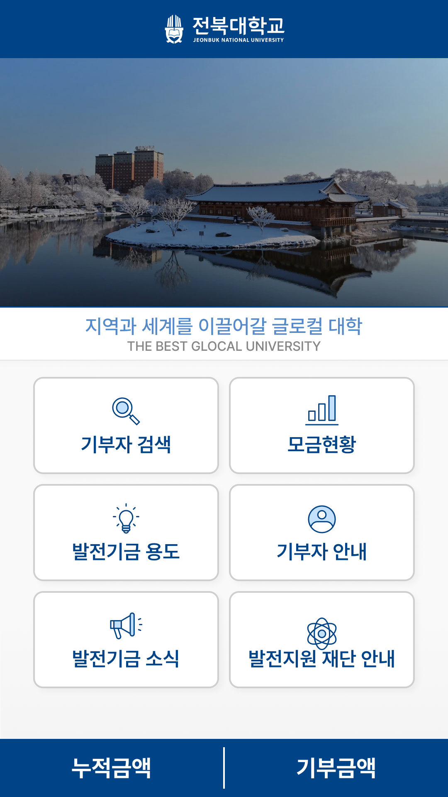
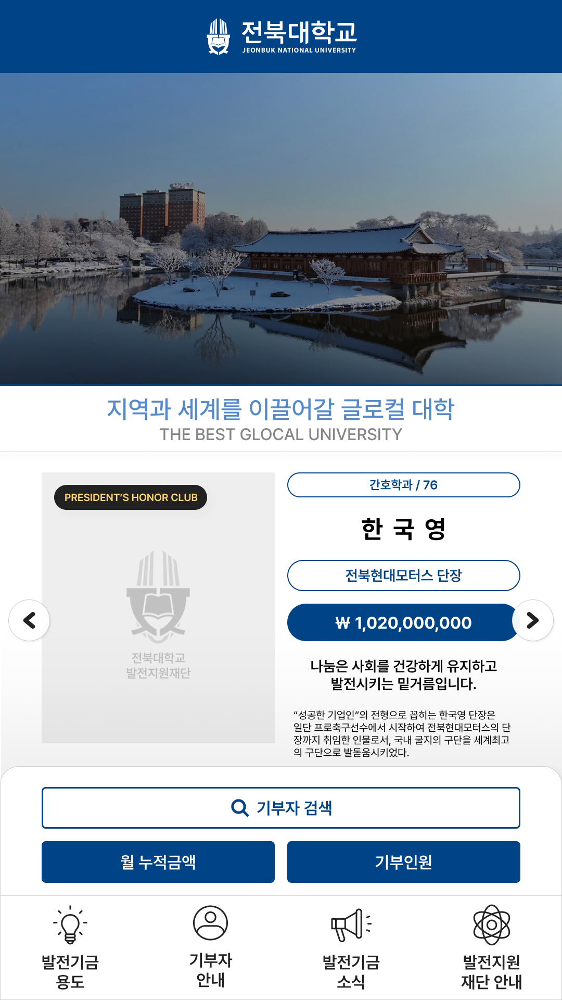
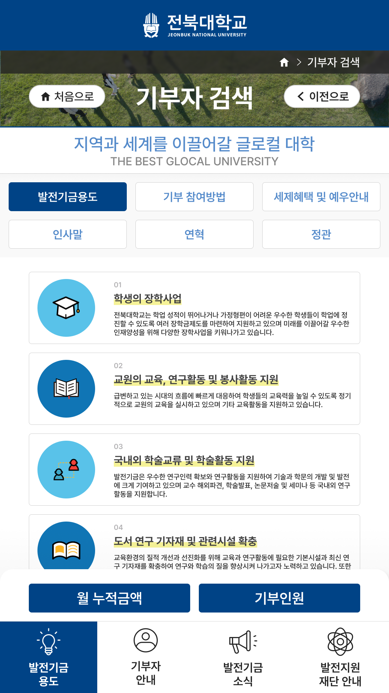
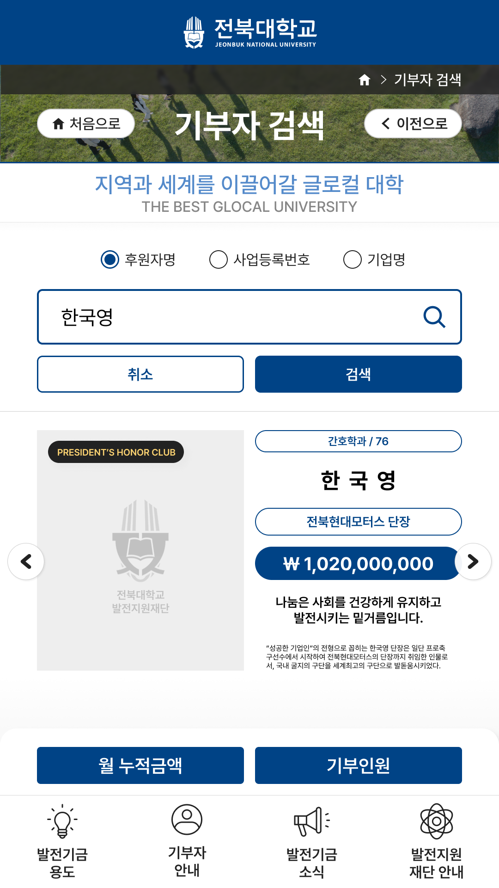
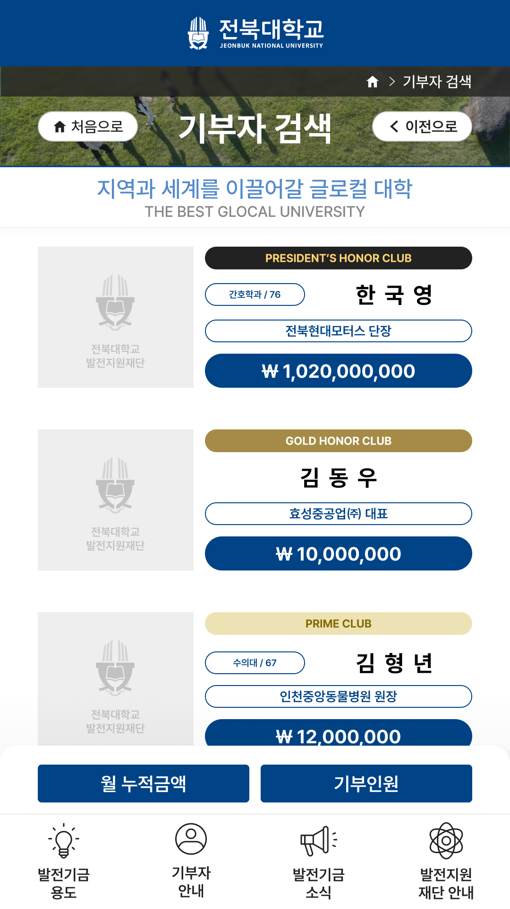
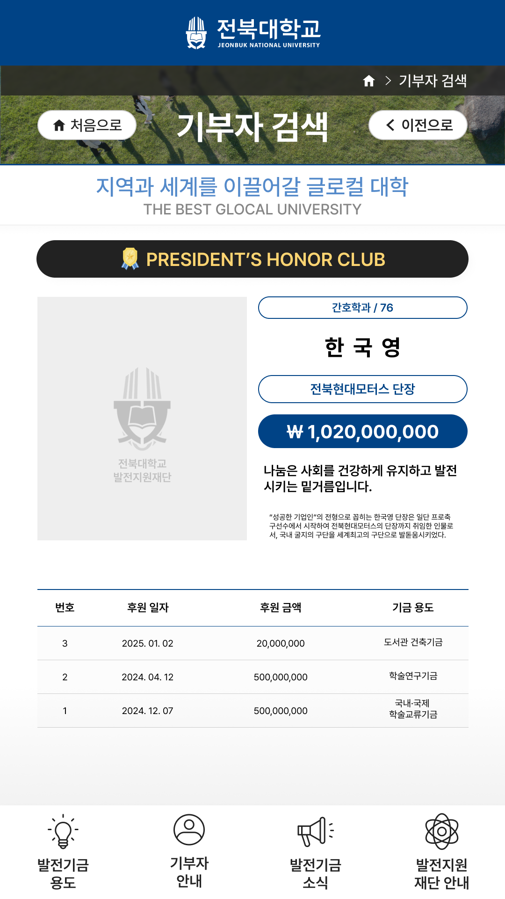

편리한 서비스를 위한 직관적인 인터페이스 디자인
본 프로젝트는 전북대학교 발전지원재단에서 사용되는 기부금 키오스크 UX를 설계한 작업입니다. 사용자가 짧은 시간 안에 정보를 이해하고 자연스럽게 선택할 수 있도록 직관적인 구조와 간결한 인터페이스를 중심으로 경험을 설계했습니다.
최소한의 단계로 원하는 정보에 접근
터치 기반 환경에 최적화된 UI 설계
시각적 계층을 통한 가독성 향상


주요 기능을 한눈에 확인할 수 있도록 카드형 UI로 구성하여 사용자가 빠르게 기능을 선택할 수 있도록 설계했습니다. 기부자 검색, 정보 확인 등 핵심 기능을 직관적으로 배치하여 인지 부담을 줄이고 탐색 효율을 높였습니다.

기부자 정보와 기부 금액을 강조하여 중요한 정보가 빠르게 인지될 수 있도록 구성했습니다. 시각적 계층을 통해 사용자가 자연스럽게 정보를 읽을 수 있도록 설계했습니다.

이름 및 기업명 검색 기능을 통해 사용자가 원하는 정보를 빠르게 찾을 수 있도록 구성했습니다. 입력부터 결과 확인까지의 흐름을 단순화하여 키오스크 환경에 적합한 사용자 경험을 제공합니다.


결과를 카드형 UI로 제공하여 정보 탐색을 쉽게 하고 주요 데이터를 강조하여 시각적 집중도를 높였습니다. 사용자가 빠르게 비교하고 선택할 수 있도록 구성했습니다.
불필요한 단계를 제거하여 빠른 이해 유도
큰 버튼과 명확한 인터랙션 설계
핵심 데이터를 시각적으로 강조